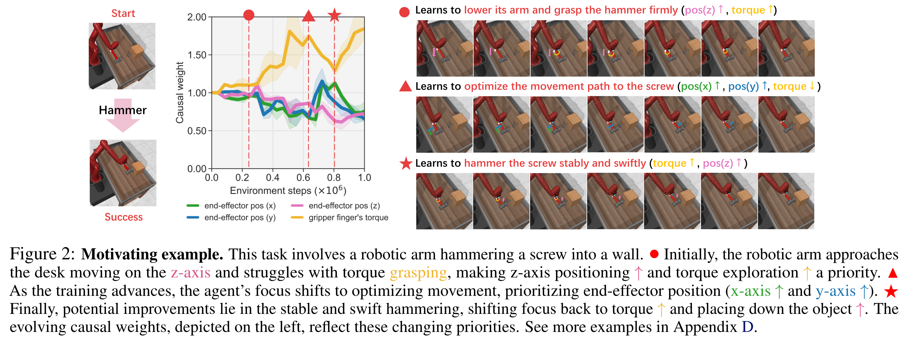
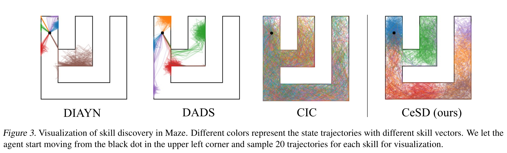

RL Papers at 2024 ICML
Contents
RL Papers at 2024 ICML#
I found and listed up some RL papers accepted at 2024 ICML. Ths listed papers are selected based on my interest. I am mainly interested in (1) model-free off-policy algorithm for a continuous action space and (2) offline/online unsupervised RL. I prefer empirical papers to theoretical papers, because I have a poor mathematical background.
For each paper below, I wrote the affiliation(s) of the first author (or authors with the equal contribution). I borrowed a representative video/figure for each paper without author’s permission, but leave the related mention. If the authors do not want to use their figure/video, please email me.
Please note that my summaries of the listed paper may contain incorrect information. Please, let me know if you find any such misleading information.
Model-free RL & Model-based RL#
ACE: Off-Policy Actor-Critic with Causality-Aware Entropy Regularization#

Tianying Ji, Yongyuan Liang, Yan Zeng, Yu Luo, Guowei Xu, Jiawei Guo, Ruijie Zheng, Furong Huang, Fuchun Sun, Huazhe Xu, Tsinghua University, University of Maryland
Keywords: Model-free RL, Causal effect of each action dimension to reward
Paper link: https://arxiv.org/abs/2402.14528
Project page: https://ace-rl.github.io/
Summary (Note that I partially understood this paper)
Let an action space \(\mathcal{A} \subseteq \mathbb{R}^{d}\) be given. Then, an action \(\mathbf{a} = (a_1, a_2, \ldots, a_d)\) is a \(d\)-dimensional vector.
Motivation: Over the course of training, the trained primitive behavior might be different. For example, if the task is to grasp a hammer and hit a screw (see the left figure above), then the agent would learn to lower its arm and grasp the hammer firmly in the early stage of training, Then, the agent learns to optimize its movement path to hit the screw (the right figure). For each primitive behavior, the relationship between each action dimension \(a_i\) and the corresponding reward \(r\) might be different (the middle figure). Thus, we should consider the causal effect of each action dimension and recieved reward.
This paper propose to CausalSAC, which uses the causality-aware entropy \(\mathcal{C}\) instead of the standard entropy:
where the weight \(\mathbf{B}_{a_i\rightarrow r | \mathbf{s}}\) is a causal effects from \(a_i\) to \(r\) given \(\mathbf{s}\), can be discovered by the DirectLiNGAM method.
To prevent the overfitting due to excessive focus on certain behavior, this paper uses gradient-dormancy-based reset mechanism, i.e., they periodically add random intialized parameters to the curruent network parameters:
where \(\eta\) is determined by the degree of gradient-dormancy.
AHAC: Adaptive Horizon Actor-Critic for Policy Learning in Contact-Rich Differentiable Simulation#
Ignat Georgiev, Krishnan Srinivasan, Jie Xu, Eric Heiden, and Animesh Garg, Georgia Institute of Technology
Keywords: First-order model-based RL, Differentiable simulation
Paper link: https://arxiv.org/abs/2405.17784
Project page: https://adaptive-horizon-actor-critic.github.io/
Summary (Note that I partially understood this paper)
The specific scope of this work is First-Order Model-Based RL (FO-MBRL), which optimizes the objective function by directly computing the gradient of returns:
Computing this gradient involves the chain rule. For example, suppose that \(H=3\). Then, the gradient of \(r(s_3, a_3)\) is as follows:
Assume the state \(s_3\) has stiff dynamics, i.e., \(\lVert \nabla_\theta f(s_2, a_2) \rVert > C\) for some \(C\). Then, the sampled gradient estimation has a large error. Thus, they want to truncated the trajectory at the point of stiff dynamics.
They introduces a novel constrained objective for the actor with the constrained term \(\lVert \nabla_\theta f(s_t, a_t) \rVert \le C, \forall t\in\left\{ 0,\ldots,H \right\}\). Thus, they reduces gradient error obtained from samples at stiff dynamics.
Online/Offline Unsupervised RL#
HILP: Foundation Policies with Hilbert Representations#
Seohong Park, Tobias Kreiman, Sergey Levine, UC Berkeley
Unsupervised Offline RL
Paper link: https://arxiv.org/abs/2402.15567
Project page: https://seohong.me/projects/hilp/
Summary
HILP consists of two training phase. The first phase trains an encoder \(\phi: \mathcal{S} \rightarrow \mathcal{Z}\) that preserves the temporal distance (the minimum number of time steps from \(s\) to \(g\), denoted as \(d^{*}(s, g))\) between two states in the original state space, i.e., we want to find an encoder \(\phi\) that satisfies the following property
HILP learns such encoder in a very elegant way. They borrow the notion of optimal goal-conditioned value function. The optimal goal-conditioned value function has the following property:
Then, the encoder will satisfy the following:
This implies that the optimal goal-conditioned value function can be implicitly defined by using the encoder. The encoder is trained using the following objective for each sample \((s, s', g) \sim \mathcal{D}\).
where \(\mathcal{l}^2_\tau(x) |\tau - \mathbb{1}(x<0)|x^2\) represents the expectile loss (i.e. they use IQL).
The second phase trains a latent-conditioned policy \(\pi(a|s, z)\) with a intrnsic reward function defined as
where \(z\) is sampled uniformly from the set of unit vectors. To maximize such reward function, the policy \(\pi(a|s, z)\) must take an action that makes the next state \(s'\) as far as from \(s\) in the direction of \(z\). Since \(z\) is arbitrary, HILP obtains a set of policies that span the latent span, capturing diverse behaviors from the unlabeled dataset.
FRE: Unsupervised Zero-Shot Reinforcement Learning via Functional Reward Encodings#
Kevin Frans, Seohong Park, Pieter Abbeel, Sergey Levine, UC Berkeley
Keywords: Unsupervised offline RL, followed by zero-shot deployment to a labeled offline RL
Paper link: https://arxiv.org/abs/2402.17135
Project page: https://github.com/kvfrans/fre
Summary
During the unsupervised offline RL phase, it learns Functional Reward Encoding (FRE), which is a Transformer-based encoder that takes as a set of (state, action) pairs from an offline dataset and predicts their rewards.
Here, reward functions are sampled from the one of goal-condition reward, random linear reward, and random MLP reward.
Strength: It requires very small number of \((s, r)\) pairs (specifically 32 pairs) to find the task vector, whereas prior methods (Forward-Backward method or Successor Features) required more than thousands pairs (specifically 5120 pairs).
CeSD: Constrained Ensemble Exploration for Unsupervised Skill Discovery#

Chenjia Bai, Rushuai Yang, Qiaosheng Zhang, Kang Xu, Yi Chen, Ting Xiao, Xuelong Li, Shanghai Artificial Intelligence Laboratory
Keywords: Online unsupervised skill discovery with exploration
Paper link: https://arxiv.org/abs/2405.16030
Project page: https://github.com/Baichenjia/CeSD
Summary
Motivation: When training skill policies \(\pi(a|s, z)\), different skills share the same value network, thus optimizing one skill can affect learning other skills, which results in a low diversity of behaviors. \(\rightarrow\) Using an ensemble of value functions.
This paper learns \(n\) skills using an ensemble of \(n\) value functions.
Each value function maximize the entropy of a subset of a state space \(H(\mathcal{S}_i)\) where \(\mathcal{S}_i \subseteq \mathcal{S}\) and \(\mathcal{S}_i \cap \mathcal{S}_j = \emptyset\) for all \(i \ne j\).
A partition \(\left\{ \mathcal{S}_1, \ldots, \mathcal{S}_n \right\}\) of state spaces is implemented using Proto-RL
Position Papers#
Position: Open-Endedness Is Essential for Artificial Superhuman Intelligence#
Edward Hughes, Michael Dennis, Jack Parker-Holder, Feryal Behbahani, Aditi Mavalankar, Yuge Shi, Tom Schaul, Tim Rocktäschel, DeepMind
Paper link: https://arxiv.org/abs/2406.04268
Summary
I haven’t read yet. It will be updated soon.